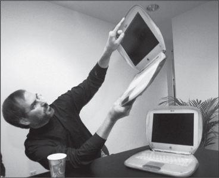

TWENTY-FIRST-CENTURY MACS
Setting Apple Apart

With the iBook, 1999
Clams, Ice Cubes, and Sunflowers
Ever since the introduction of the iMac in 1998, Jobs and Jony Ive had made beguiling design a signature of Apple's computers. There was a consumer laptop that looked like a tangerine clam, and a professional desktop computer that suggested a Zen ice cube. Like bell-bottoms that turn up in the back of a closet, some of these models looked better at the time than they do in retrospect, and they show a love of design that was, on occasion, a bit too exuberant. But they set Apple apart and provided the publicity bursts it needed to survive in a Windows world.
The Power Mac G4 Cube, released in 2000, was so alluring that one ended up on display in New York's Museum of Modern Art. An eight-inch perfect cube the size of a Kleenex box, it was the pure expression of Jobs's aesthetic. The sophistication came from minimalism. No buttons marred the surface. There was no CD tray, just a subtle slot. And as with the original Macintosh, there was no fan. Pure Zen. "When you see something that's so thoughtful on the outside you say, ‘Oh, wow, it must be really thoughtful on the inside,'" he told Newsweek. "We make progress by eliminating things, by removing the superfluous."
The G4 Cube was almost ostentatious in its lack of ostentation, and it was powerful. But it was not a success. It had been designed as a high-end desktop, but Jobs wanted to turn it, as he did almost every product, into something that could be mass-marketed to consumers. The Cube ended up not serving either market well. Workaday professionals weren't seeking a jewel-like sculpture for their desks, and mass-market consumers were not eager to spend twice what they'd pay for a plain vanilla desktop. Jobs predicted that Apple would sell 200,000 Cubes per quarter. In its first quarter it sold half that. The next quarter it sold fewer than thirty thousand units. Jobs later admitted that he had overdesigned and overpriced the Cube, just as he had the NeXT computer. But gradually he was learning his lesson. In building devices like the iPod, he would control costs and make the trade-offs necessary to get them launched on time and on budget.
Partly because of the poor sales of the Cube, Apple produced disappointing revenue numbers in September 2000. That was just when the tech bubble was deflating and Apple's education market was declining. The company's stock price, which had been above $60, fell 50% in one day, and by early December it was below $15.
None of this deterred Jobs from continuing to push for distinctive, even distracting, new design. When flat-screen displays became commercially viable, he decided it was time to replace the iMac, the translucent consumer desktop computer that looked as if it were from a Jetsons cartoon. Ive came up with a model that was somewhat conventional, with the guts of the computer attached to the back of the flat screen. Jobs didn't like it. As he often did, both at Pixar and at Apple, he slammed on the brakes to rethink things. There was something about the design that lacked purity, he felt. "Why have this flat display if you're going to glom all this stuff on its back?" he asked Ive. "We should let each element be true to itself."
Jobs went home early that day to mull over the problem, then called Ive to come by. They wandered into the garden, which Jobs's wife had planted with a profusion of sunflowers. "Every year I do something wild with the garden, and that time it involved masses of sunflowers, with a sunflower house for the kids," she recalled. "Jony and Steve were riffing on their design problem, then Jony asked, ‘What if the screen was separated from the base like a sunflower?' He got excited and started sketching." Ive liked his designs to suggest a narrative, and he realized that a sunflower shape would convey that the flat screen was so fluid and responsive that it could reach for the sun.
In Ive's new design, the Mac's screen was attached to a movable chrome neck, so that it looked not only like a sunflower but also like a cheeky Luxo lamp. Indeed it evoked the playful personality of Luxo Jr. in the first short film that John Lasseter had made at Pixar. Apple took out many patents for the design, most crediting Ive, but on one of them, for "a computer system having a movable assembly attached to a flat panel display," Jobs listed himself as the primary inventor.
In hindsight, some of Apple's Macintosh designs may seem a bit too cute. But other computer makers were at the other extreme. It was an industry that you'd expect to be innovative, but instead it was dominated by cheaply designed generic boxes. After a few ill-conceived stabs at painting on blue colors and trying new shapes, companies such as Dell, Compaq, and HP commoditized computers by outsourcing manufacturing and competing on price. With its spunky designs and its pathbreaking applications like iTunes and iMovie, Apple was about the only place innovating.
Apple's innovations were more than skin-deep. Since 1994 it had been using a microprocessor, called the PowerPC, that was made by a partnership of IBM and Motorola. For a few years it was faster than Intel's chips, an advantage that Apple touted in humorous commercials. By the time of Jobs's return, however, Motorola had fallen behind in producing new versions of the chip. This provoked a fight between Jobs and Motorola's CEO Chris Galvin. When Jobs decided to stop licensing the Macintosh operating system to clone makers, right after his return to Apple in 1997, he suggested to Galvin that he might consider making an exception for Motorola's clone, the StarMax Mac, but only if Motorola sped up development of new PowerPC chips for laptops. The call got heated. Jobs offered his opinion that Motorola chips sucked. Galvin, who also had a temper, pushed back. Jobs hung up on him. The Motorola StarMax was canceled, and Jobs secretly began planning to move Apple off the Motorola-IBM PowerPC chip and to adopt, instead, Intel's. This would not be a simple task. It was akin to writing a new operating system.
Jobs did not cede any real power to his board, but he did use its meetings to kick around ideas and think through strategies in confidence, while he stood at a whiteboard and led freewheeling discussions. For eighteen months the directors discussed whether to move to an Intel architecture. "We debated it, we asked a lot of questions, and finally we all decided it needed to be done," board member Art Levinson recalled.
Paul Otellini, who was then president and later became CEO of Intel, began huddling with Jobs. They had gotten to know each other when Jobs was struggling to keep NeXT alive and, as Otellini later put it, "his arrogance had been temporarily tempered." Otellini has a calm and wry take on people, and he was amused rather than put off when he discovered, upon dealing with Jobs at Apple in the early 2000s, "that his juices were going again, and he wasn't nearly as humble anymore." Intel had deals with other computer makers, and Jobs wanted a better price than they had. "We had to find creative ways to bridge the numbers," said Otellini. Most of the negotiating was done, as Jobs preferred, on long walks, sometimes on the trails up to the radio telescope known as the Dish above the Stanford campus. Jobs would start the walk by telling a story and explaining how he saw the history of computers evolving. By the end he would be haggling over price.
"Intel had a reputation for being a tough partner, coming out of the days when it was run by Andy Grove and Craig Barrett," Otellini said. "I wanted to show that Intel was a company you could work with." So a crack team from Intel worked with Apple, and they were able to beat the conversion deadline by six months. Jobs invited Otellini to Apple's Top 100 management retreat, where he donned one of the famous Intel lab coats that looked like a bunny suit and gave Jobs a big hug. At the public announcement in 2005, the usually reserved Otellini repeated the act. "Apple and Intel, together at last," flashed on the big screen.
Bill Gates was amazed. Designing crazy-colored cases did not impress him, but a secret program to switch the CPU in a computer, completed seamlessly and on time, was a feat he truly admired. "If you'd said, ‘Okay, we're going to change our microprocessor chip, and we're not going to lose a beat,' that sounds impossible," he told me years later, when I asked him about Jobs's accomplishments. "They basically did that."
Among Jobs's quirks was his attitude toward money. When he returned to Apple in 1997, he portrayed himself as a person working for $1 a year, doing it for the benefit of the company rather than himself. Nevertheless he embraced the idea of option megagrants—granting huge bundles of options to buy Apple stock at a preset price—that were not subject to the usual good compensation practices of board committee reviews and performance criteria.
When he dropped the "interim" in his title and officially became CEO, he was offered (in addition to the airplane) a megagrant by Ed Woolard and the board at the beginning of 2000; defying the image he cultivated of not being interested in money, he had stunned Woolard by asking for even more options than the board had proposed. But soon after he got them, it turned out that it was for naught. Apple stock cratered in September 2000—due to disappointing sales of the Cube plus the bursting of the Internet bubble—which made the options worthless.
Making matters worse was a June 2001 cover story in Fortune about overcompensated CEOs, "The Great CEO Pay Heist." A mug of Jobs, smiling smugly, filled the cover. Even though his options were underwater at the time, the technical method of valuing them when granted (known as a Black-Scholes valuation) set their worth at $872 million. Fortune proclaimed it "by far" the largest compensation package ever granted a CEO. It was the worst of all worlds: Jobs had almost no money that he could put in his pocket for his four years of hard and successful turnaround work at Apple, yet he had become the poster child of greedy CEOs, making him look hypocritical and undermining his self-image. He wrote a scathing letter to the editor, declaring that his options actually "are worth zero" and offering to sell them to Fortune for half of the supposed $872 million the magazine had reported.
In the meantime Jobs wanted the board to give him another big grant of options, since his old ones seemed worthless. He insisted, both to the board and probably to himself, that it was more about getting proper recognition than getting rich. "It wasn't so much about the money," he later said in a deposition in an SEC lawsuit over the options. "Everybody likes to be recognized by his peers... . I felt that the board wasn't really doing the same with me." He felt that the board should have come to him offering a new grant, without his having to suggest it. "I thought I was doing a pretty good job. It would have made me feel better at the time."
His handpicked board in fact doted on him. So they decided to give him another huge grant in August 2001, when the stock price was just under $18. The problem was that he worried about his image, especially after the Fortune article. He did not want to accept the new grant unless the board canceled his old options at the same time. But to do so would have adverse accounting implications, because it would be effectively repricing the old options. That would require taking a charge against current earnings. The only way to avoid this "variable accounting" problem was to cancel his old options at least six months after his new options were granted. In addition, Jobs started haggling with the board over how quickly the new options would vest.
It was not until mid-December 2001 that Jobs finally agreed to take the new options and, braving the optics, wait six months before his old ones were canceled. But by then the stock price (adjusting for a split) had gone up $3, to about $21. If the strike price of the new options was set at that new level, each would have thus been $3 less valuable. So Apple's legal counsel, Nancy Heinen, looked over the recent stock prices and helped to choose an October date, when the stock was $18.30. She also approved a set of minutes that purported to show that the board had approved the grant on that date. The backdating was potentially worth $20 million to Jobs.
Once again Jobs would end up suffering bad publicity without making a penny. Apple's stock price kept dropping, and by March 2003 even the new options were so low that Jobs traded in all of them for an outright grant of $75 million worth of shares, which amounted to about $8.3 million for each year he had worked since coming back in 1997 through the end of the vesting in 2006.
None of this would have mattered much if the Wall Street Journal had not run a powerful series in 2006 about backdated stock options. Apple wasn't mentioned, but its board appointed a committee of three members—Al Gore, Eric Schmidt of Google, and Jerry York, formerly of IBM and Chrysler—to investigate its own practices. "We decided at the outset that if Steve was at fault we would let the chips fall where they may," Gore recalled. The committee uncovered some irregularities with Jobs's grants and those of other top officers, and it immediately turned the findings over to the SEC. Jobs was aware of the backdating, the report said, but he ended up not benefiting financially. (A board committee at Disney also found that similar backdating had occurred at Pixar when Jobs was in charge.)
The laws governing such backdating practices were murky, especially since no one at Apple ended up benefiting from the dubiously dated grants. The SEC took eight months to do its own investigation, and in April 2007 it announced that it would not bring action against Apple "based in part on its swift, extensive, and extraordinary cooperation in the Commission's investigation [and its] prompt self-reporting." Although the SEC found that Jobs had been aware of the backdating, it cleared him of any misconduct because he "was unaware of the accounting implications."
The SEC did file complaints against Apple's former chief financial officer Fred Anderson, who was on the board, and general counsel Nancy Heinen. Anderson, a retired Air Force captain with a square jaw and deep integrity, had been a wise and calming influence at Apple, where he was known for his ability to control Jobs's tantrums. He was cited by the SEC only for "negligence" regarding the paperwork for one set of the grants (not the ones that went to Jobs), and the SEC allowed him to continue to serve on corporate boards. Nevertheless he ended up resigning from the Apple board.
Anderson thought he had been made a scapegoat. When he settled with the SEC, his lawyer issued a statement that cast some of the blame on Jobs. It said that Anderson had "cautioned Mr. Jobs that the executive team grant would have to be priced on the date of the actual board agreement or there could be an accounting charge," and that Jobs replied "that the board had given its prior approval."
Heinen, who initially fought the charges against her, ended up settling and paying a $2.2 million fine, without admitting or denying any wrongdoing. Likewise the company itself settled a shareholders' lawsuit by agreeing to pay $14 million in damages.
"Rarely have so many avoidable problems been created by one man's obsession with his own image," Joe Nocera wrote in the New York Times. "Then again, this is Steve Jobs we're talking about." Contemptuous of rules and regulations, he created a climate that made it hard for someone like Heinen to buck his wishes. At times, great creativity occurred. But people around him could pay a price. On compensation issues in particular, the difficulty of defying his whims drove some good people to make some bad mistakes.
The compensation issue in some ways echoed Jobs's parking quirk. He refused such trappings as having a "Reserved for CEO" spot, but he assumed for himself the right to park in the handicapped spaces. He wanted to be seen (both by himself and by others) as someone willing to work for $1 a year, but he also wanted to have huge stock grants bestowed upon him. Jangling inside him were the contradictions of a counterculture rebel turned business entrepreneur, someone who wanted to believe that he had turned on and tuned in without having sold out and cashed in.